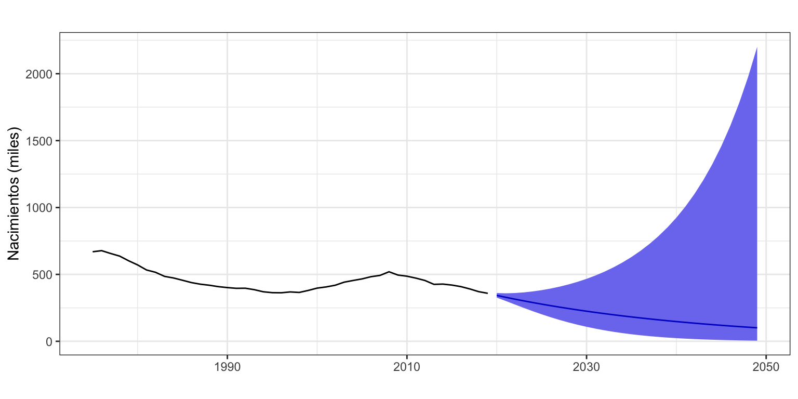
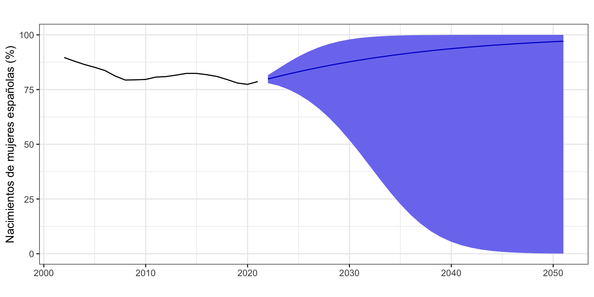

Series acotadas
Previsión con Datos Temporales (GBIA)
Series Acotadas
En ocasiones, por la naturaleza de la serie, es necesario que las predicciones sean positivas o que permanezcan dentro de cierto intervalo \([a,\; b]\).
- Todas las series que hemos visto en este curso deben ser positivas: nacimientos, libros publicados, consumo eléctrico, pasajeros, aforo…
- Si la serie fuera un porcentaje, podría ser necesario que permaneciera acotada entre 0% y 100%.
Predicciones positivas
Para imponer que las predicciones sean positivas basta trabajar con la transformación logarítmica. Por ejemplo, consideremos la serie anual de nacimientos. Vamos ha realizar predicciones a muy largo plazo (30 años) usando Alisado de Holt con y sin transformación logarítmica.
En el panel superior de la Figura 1, donde se ha usado la transformación logarítmica, no solo la predicción, sino también el intervalo es siempre positivo. Por el contrario, en el panel inferior de la Figura 1, donde no se ha usado la transformación logarítmica, las predicciones a partir de 2042 ya son negativas y el extremo inferior del intervalo de confianza es negativo desde el año 2028.
ConLog <- forecast(ets(nacimientos, model = "AAN", damped = FALSE, lambda = 0),
h = 30,
level = 95)
SinLog <- forecast(ets(nacimientos, model = "AAN", damped = FALSE),
h = 30,
level = 95)
autoplot(ConLog, main = "", xlab = "", ylab = "Bebés (miles)")
autoplot(SinLog, main = "", xlab = "", ylab = "Bebés (miles)") +
geom_hline(yintercept=0, size = .3, linetype = 2)
Predicciones dentro de un intervalo
Supongamos que el valor de la serie es un porcentaje y que debe estar comprendido entre \(a = 0\) y \(b = 100\), como por ejemplo la serie anual consistente en el porcentaje de bebés nacidos de mujeres con nacionalidad española. La transformación que garantiza que las predicciones se mantendrán dentro del intervalo \([a,\;b]\) es
\[z_t = \log\Big(\frac{y_t - a}{b - y_t}\Big),\] donde \(y_t\) es la serie original y \(z_t\) la serie transformada. Una vez tenemos las predicciones de la serie \(z_t\), tenemos que deshacer la transformación con
\[y_t = \frac{a +b\, e^{z_t}}{1 + e^{z_t}}.\]
En este caso no hay un argumento lambda que nos facilite el trabajo y hay que escribir más código.
a <- 0
b <- 100
z <- log((serie - a) / (b - serie))
modelo <- ets(z,
model = "AAN",
damped = FALSE)
pz <- forecast(modelo,
h = 30,
level = 95)
pz[["mean"]] <- (a + b * exp(pz[["mean"]]) ) / (1 + exp(pz[["mean"]]))
pz[["lower"]] <- (a + b * exp(pz[["lower"]])) / (1 + exp(pz[["lower"]]))
pz[["upper"]] <- (a + b * exp(pz[["upper"]])) / (1 + exp(pz[["upper"]]))
pz[["x"]] <- serie
autoplot(pz,
main = "",
xlab = "")
Hemos solicitado una previsión a 30 años vista para poder ver mejor el efecto de acotar la serie. En la Figura 2 se observa que en nuestro ejemplo no solo la predicción, sino también el intervalo está siempre entre 0% y 100%.